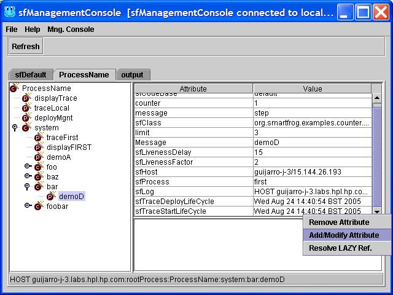

SmartFrog User Manual
- Introduction
- SmartFrog Framework
- Using The Framework
-
The Command-Line Scripts
- SFHOME environment variable
- setSFProperties script
- setSFDefaultProperties script
- setSFDynamicClassLoadingProperties script
- setSFSecurityProperties script
- sfDaemon
- smartfrog
- sfRun
- sfStart
- sfStop
- sfStopDaemon
- sfDetachAndTerminate
- sfTerminate
- sfParse
- sfPing
- sfDiagnostics
- sfVersion
- Typical Usage Models
- sfManagementConsole
- Re- Compiling the examples
- Enabling Security
- Remote Class Loading
- Running The First Example
- SmartFrog Command Line
- Troubleshooting
SmartFrog User Manual
For SmartFrog Version 3.06
Table Of Contents
Introduction
This manual is aimed at those wanting to run the SmartFrog framework. It assumes that user is working with the binary distribution of the SmartFrog framework.
It describes:
-
Directory structure for the binary distribution
-
Starting and managing the daemons
-
Setting up and managing the security infrastructure
-
Running the first example
-
Configuring dynamic code downloading
-
The manual does not cover details of how to write SmartFrog applications i.e. how to use the SmartFrog notation, the component model, etc. The reader is directed to the SmartFrog Reference Manual and its accompanying Javadoc for this information.
SmartFrog Framework
Directories and Files in the binary distribution
SFHOME = INSTALLATION_DIRECTORY/dist
The distribution expanded into SFHOME contains a number of directories and files. These are
-
docs – a directory which includes a number of documents describing the framework and examples. It also includes the javadocs for the framework and the accompanying packages.
-
bin – contains scripts for starting and stopping the daemons and applications; these may be used as is, or modified as required to suit local conditions. It may be desirable to include SFHOME/bin in any path environmental variable used by the shells.
-
lib – contains all the jar files provided in the distribution.
-
signedLib – initially empty, it is used for placing jar files signed during the security initialization process. Not all jar files in lib will be signed as not all are compatible with the security infrastructure.
-
testCA – the files needed to provide a dummy certification authority for testing security for those who do not have access to OpenSSL.
-
private – a directory which will contain files for the security infrastructure. Note that before any re-installation of the infrastructure, this directory may need to be saved to preserve security information. For more details see section .
-
src – the source code for some examples showing a few of the capabilities of the system. These examples have been precompiled and are provided in sfExamples.jar in the lib directory.
-
build.xml1
ANT 1.6.5 or later (http://ant.apache.org/) and Java JDK 1.4.2 have to be installed and properly configured to be able to re-compile the examples, generate javadocs for the examples and run the security build process.
– a file used by ant to re/compile the examples, to generate the javadocs for the examples and to control the security build process. -
rmitargets – a file that contains the classes that need to be compiled with the rmic compiler.
Classpath
We recommend that you start SmartFrog using the packaged scripts. When this is done, there should be no need to set the class path as it is set within the scripts. However, if the user does not use the scripts, he/she has to set the classpath. The classpath settings are determined by the use of security and/or remote class loading.
-
No security; classes are local –set the class path to include every jar file in the lib directory [For reference see packaged scripts setSFProperties and setClassPath]
-
Security; classes are local – set the class path to include every jar file in the signedLib directory; these are only present after the security infrastructure has been built and not all of the packages are available in this case.
-
With remote class loading – set the class path to minimally include one of the lib/smartfrog.jar or signedLib/smarfrog.jar files, depending on whether security is enabled or not. This must be local since otherwise SmartFrog cannot be started and the class loading initiated. In addition, the property org.smartfrog.codebase must be set to contain URLs to the remaining jar files. This should be done even with the process running the server component.
-
More details of how to do this are in the section on remote class loading.
Using The Framework
SmartFrog has many different ways of being started; all provided by the Java class SFSystem that is fully documented in the SmartFrog reference manual. Users may use either this class or the scripts provided in the SFHOME/bin directory. This section only covers the use of these scripts.
The scripts provide some of the more common use models for the SmartFrog framework. They are provided primarily to give users a simple way of experimenting with the framework and are useful for running the examples provided with the distribution.
All the scripts assume the following:
-
security features are not required (for enabling security, setSFProperties script is provided in the directory SFHOME/bin.
-
the SFHOME variable has been set to refer to the installation directory.
It is, of course, possible to use remote class loading and security together. However, it should be noted that it is left to users to create appropriate scripts for their specific environment, those provided are merely examples demonstrating what must be done. The full set of environmental variations is too great for a generalized script set to be provided.
There are two concepts to understand as part of the underlying control of the SmartFrog system. The first of these is the SmartFrog Resource Reference (SFREF). This is a URL to a description file to deploy or otherwise use. The second is an SmartFrog Action Descriptor (SFACT), which is used to indicate to SmartFrog an action to take. These are now described in more detail.
SmartFrog Resource References
Throughout the SmartFrog system, including on the command line, references to SmartFrog resources (i.e. files) may be given in a number of ways:
-
as a URL to the file;
-
as a relative or absolute path name to a file;
-
as a path to a resource in a jar file on the classpath or code base.
In this last case, the reference should be given as a path relative to the root of the package structure within the jar file, i.e. without the leading "/". In most cases this leading "/"is removed by the code, but there may be some instances where this is not so.
In the following descriptions of the scripts, a reference to such a resource is referred to as an SFREF.
SmartFrog Action Descriptor
An action descriptor is used on the command line to describe a certain type of action that will be carried on by the daemon. An action has a number of “:” separated fields, most of which may be left blank in many cases.
The format is:
NAME:ACTION:SFREF:SUBREF:HOST:PROCESS
The semantics of the fields are defined as follows:
NAME
The name is a single word, or a SmartFrog reference in which case it must be surrounded by quotes. The name has one of two interpretations depending on the action to be taken (see next field).
In TERMINATE, DETACH, DETaTERM, PING, DIAGNOSTICS the name is a reference to the component on which to apply the action.
In DEPLOY, the name is treated like a placement and the name is split into two: all but the last part is a reference to another component and the last (or only) part is the name which will be given to the deployed component within that referenced component. If the component is not a ProcessCompound, the component is also made the parent of the deployment.
In all cases, the NAME is resolved relative to the process compound of the HOST and PROCESS specified by the appropriate fields.
When a name is not provided, it indicates the process compound of the host and process defined in the HOST and PROCESS fields. Also, in DEPLOY no name means use the sfProcessComponentName from the description if available or generate a random name to name the deployed description.
Examples:
foo
"HOST localhost:foo"
ACTION
This field defines the action to be taken on the named component
-
DEPLOY a component or application.
-
TERMINATE a component or application.
-
DETACH a component from its parent.
-
DETaTERM detach and terminate a component from its parent.
-
PING a component.
-
PARSE a description and generates report.
-
DIAGNOSTICS a component and generate report.
SFREF
The SmartFrog description (if needed) to be used by ACTION. It is a SmartFrog Resource Reference see 3.1. It needs to use quotes (“ or ') when the reference is using “:”. Currently this is only required for a DEPLOY and PARSE actions and is ignored otherwise.
Examples:
/home/sf/foo.sf
"c:\sf\foo.sf"
'c:\sf\foo.sf'
SUBREF
When the SFREF is parsed and resolved, the result is a component description containing a number of attributes. In the “sf” language, this is the contents of the sfConfig definition. Under normal circumstances, it is this whole definition that is used for the deployment, but occasionally, for testing purposes perhaps, it is useful to specify some single subcomponent. Under these circumstances, the name of this attribute, or a reference to a deeply nested application, may be provided. This is the SUBREF.
Examples:
foo
"fist:foo"
'fist:foo'
HOST
host name or IP from where to resolve the name. If HOST is not present, the process name is ignored and the process executing is used. If you want to refer to another process, other than the executing one, on the local host, "localhost" should be used and the appropriate PROCESS name used.
Examples:
foo.hpl.hp.com
127.0.0.1
PROCESS
process name from where to resolve the name. When empty it defaults to “rootProcess”.
Examples
These examples show the use of the action descriptors for different purposes.
Example 1: Deploy a description in the local daemon
Ex1:DEPLOY:org/smartfrog/examples/counter/example.sf::localhost:
Example 2. Terminate the local sfDaemon
rootProcess:TERMINATE:::localhost:
or
:TERMINATE:::localhost:
Example 3: Deploy "counterToSucceed" from counter/example2.sf
counterEx3:DEPLOY:org/smartfrog/examples/counter/example2.sf:"testLevel1:counterToSucceed":localhost:
Example 4: Get diagnostics report for "sfDefault" component running in localhost
sfDefault:DIAGNOSTICS:::localhost:
The Command-Line Scripts
SFHOME environment variable
This is a variable needed by all shell scripts to determine where the SmartFrog distribution files are installed
setSFProperties script
setSFProperties is a script for setting all the necessary SmartFrog environment properties for starting the daemon and running the applications in various modes like without security, with security and remote classloading.
This script calls other three scripts to set all the necessary properties:
setDefaultProperties
setSFDynamicClassLoadingProperties. Run if SFDYNAMICCLASSLOADING_ON is set.
setSFSecurityProperties. Run if SFSECURITY_ON is set.
These scripts are called in this order so that some properties can be overwritten in the same order. For example, when security is enabled, the setSecurityProperties file overwrites SFDEFAULTSF and SFDEFAULTINI properties that sfDefaultProperties file also defines.
Other properties:
-
-
-
SFLIBPATH: to set library path (lib, signedLib, user-defined library path) for SmartFrog jar files.
-
CLASSPATH: this script also sets the classpath to include the required JAR files for various modes like security on/security off and/or classloading by using setClassPath script with SFLIBPATH variable.
-
-
setSFDefaultProperties script
setSFDefaultProperties is a script for setting the default smartfrog environment properties for running smartfrog. This script is run by setSFProperties when the environment variable SFSECURITY_ON is set.
Properties:
-
-
-
SFUSERHOME: to set the user lib directory. There are several variables available for the user to set several lib directories: SFUSERHOME, SFUSERHOME1, SFUSERHOME2, SFUSERHOME3, SFUSERHOME4
-
SFDEFAULTINI: to set the property org.smartfrog.inifile for default.ini file which defines all the JVM system properties.
-
SFDEFAULTSF: to set the property org.smartfrog.sfcore.processcompound.sfDefault.sfDefault for default.sf that contains some standard components to be deployed in all daemons and subprocesses.
-
-
setSFDynamicClassLoadingProperties script
setSFDynamicClassLoadingProperties is a script for setting all the necessary smartfrog environment properties for starting the daemon and running the applications with dynamic class-loading enabled. This script is run by setSFProperties when the environment variable SFDYNAMICCLASSLOADING_ON is set.
Properties:
-
-
-
SERVER: to set the hostname for remote class loading.
-
CODEBASE: to contain URLs to include additional jar files for remote classloading.
-
SFCODEBASE: to set the property org.smartfrog.codebase to contain URLs to include additional jar files for remote classloading.
-
-
setSFSecurityProperties script
setSFSecurityProperties is a script for setting all the necessary SmartFrog environment properties for starting the daemon and running the applications with security enabled. This script is run by setSFProperties when the environment variable SFSECURITY_ON is set.
Properties:
-
-
-
SFSECURITY: to set the properties for enabling the security infrastructure.
-
SFDEFAULTINI: to set the property org.smartfrog.inifile for default.ini file which defines all the JVM system properties. This property will overwrite the definition included by setSFDefaultProperties.
-
SFDEFAULTSF: to set the property org.smartfrog.sfcore.proccesscompound.sfDefault.sfDefault for default.sf that contains some standard components to be deployed in all daemons and subprocesses. This property will overwrite the definition included by setSFDefaultProperties.
-
SFHOSTNAME: to determine the credentials to used. It defines the name of the subdirectory in private that contains the credentials. host1 is used as default value.
The user only needs to modify these properties (SFUSERHOME,SFDYNAMICCLASSLOADING_ON, SFSECURITY_ON, SFDEFAULTINI, SFDEFAULTSF, SERVER, CODEBASE, SFCODEBASE, SFSECURITY) for various modes in this script or in his system environment and all the other scripts for daemons and applications will use them.
-
-
sfDaemon
sfDaemon is a script that creates a root process compound (see reference manual). As a root process, it starts a registry to enable it to be located by other SmartFrog systems, by default this registry is on port 3800.
At start up, the daemon (and every sub-process created by it) reads the following files from the directory ${SFHOME}/bin/ .
-
-
-
default.ini : to define JVM system properties; this may be edited to alter those it uses. It may not be used for properties that affect security or code loading – it is read after these are already initialized.
-
default.sf : containing some standard components that should be deployed in all daemons and sub-processes; this may be edited as required. By default, it contains a component to start a display window for the process (shows stdout, stderror and provides additional information). This description registers itself using the name sfDefault.
-
-
To stop the daemon, see sfStopDaemon.
smartfrog
smartfrog wraps SFSystem. The SFSystem is documented in the SmartFrog reference manual. smartfrog behaves like sfDaemon except that the daemon created is not a root process, just a simple daemon which can be used to run SmartFrog applications which are run locally or do not require other SmartFrog systems to locate them.
The command line parameters are as for sfDaemon, none, one or more than one of each is permitted:
-
-
-
-a SFACT: SmartFrog Action Descriptors (SFACT) that the daemon has to execute.
-
-f SFREF: file that contains a set of SmartFrog Action Descriptors (SFACT).
-
-e: the daemon will terminate after finishing the deployment. Similar functionality can be achieved with:
-
-
-
-
-
-
-
-
-
-
-d: environment diagnostics report for daemon
-
-?: usage and help information
-
-
-
-
-
-
-
Only the default.ini file is read by default: editing the script will be required to change this.
The smartfrog script is the most flexible command and can be used to replace all other scripts except sfDaemon.
sfRun
The sfRun script is similar to sfDaemon except that the daemon created is not a root process, just a simple daemon which can be used to run SmartFrog applications which are run locally or do not require other SmartFrog systems to locate them using the registry (HOST links).
The command line parameters are:
-
-
-
SFREF : the SFREF where the text is to be found to be parsed and deployed.
-
-e: to terminate the daemon after if finishes the deployment. Optional.
-
-
Only the default.ini file is read by default: editing the script will be required to change this.
This command is equivalent to:
smartfrog -a :DEPLOY:SFREF::: -e
sfStart
sfStart is a simple way of getting applications launched into a network of SmartFrog daemons, even if one is not running on the local host. The command line is
-
sfStart hostname appname SFREF
with the following interpretation:
-
hostname : is the name of a host on which the root daemon is running through which deployment should be done; the name localhost may be used to indicate that the daemon is running locally.
-
appname : the name by which the application should be known in that daemon – this is important for sfTerminate. If not name is provided (using “”) if available sfProcessComponentName attribute in the description will be used to name the application or, if it is not available a random name will be generated.
-
SFREF : the SFREF where the text is to be found to be parsed and deployed.
This command is equivalent to:
smartfrog -a appname:DEPLOY:SFREF::hostname: -e
sfStop
sfStop is now obsolete and replaced by sfTerminate. Please see sfTerminate.
sfStopDaemon
sfStopDaemon is the counterpart to the sfDaemon command, in that it can terminate every application that was deployed in a daemon and then the daemon itself.
The command line is:
sfStopDaemon hostname
with the following interpretation:
-
hostname : is the name of a host on which the root daemon is running through which deployment should be done; the name localhost may be used to indicate that the daemon is running locally.
This command is equivalent to:
sfTerminate hostname rootProcess
or
smartfrog -a rootProcess:TERMINATE:::hostname: -e
or
smartfrog -a :TERMINATE:::hostname: -e
sfDetachAndTerminate
sfDetachAndTerminate is a script that detaches the named component from the SmartFrog system and then terminates it. This detachment and termination does not affect the other components.
The command line is:
-
sfDetachAndTerminate hostname appname
with the following interpretation:
-
hostname : is the name of a host on which the root daemon is running through which deployment should be done; the name localhost may be used to indicate that the daemon is running locally.
-
appname : the complete name by which the component should be known in that daemon.
This command is equivalent to:
-
smartfrog -a appname:DETaTERM:::hostname: -e
sfTerminate
sfTerminate is a script that terminates the named component from the SmartFrog system. The termination does not affect the other components.
The command line is:
-
sfTerminate hostname appname
with the following interpretation:
-
hostname : is the name of a host on which the root daemon is running through which deployment should be done; the name localhost may be used to indicate that the daemon is running locally.
-
appname: the complete name by which the component should be known in that daemon.
This command is equivalent to:
-
smartfrog -a appname:TERMINATE:::hostname: -e
sfParse
sfParse is different from the other scripts in that it does not invoke the SFSystem class to deploy the application. It is merely a tool to help in learning the notation or to debug an application description when unexpected effects are observed.
The sfParse script parses and fully resolves the description and then prints the resultant expanded and processed description to the console.
If the verbose flag is set, the sfParse script carries out the same process, but at each step, the abstract syntax tree on which the various tools operate is printed to the console. Consequently, the complete description (with include files expanded) is printed, it is printed again after type resolution, again after place resolution and so on, for all the required phases.
The command is
sfParse [-v] [-q] [-r] [-R] {[-f] filename | SFREF}
All the command line parameters are:
-
-v: verbose, prints every parser phase.
-
-q: quiet, no phase printed. Overrides -v. Only errors are reported.
-
-r: show status parsing report.
-
-R: create status parsing report in an HTML file named: <filename>_report.html.
-
-f filename: file with a list of SmartFrog descriptions (SFREFs) to parse.
-
SFREF: reference for a SmartFrog file or description.
-
-?: shows command line usage info.
Example:
sfParse -r org/smartfrog/examples/counter/example.sf
sfPing
sfPing pings a component to check if it is alive. If no component is selected it will ping the root process compound.
sfPing hostname [componentname]
-
smartfrog -a componentname:PING:::hostname: -e
sfDiagnostics
sfDiagnostics creates a diagnostics report for a component. If no component is selected it will create the diagnostics report for the root process compound.
sfDiagnostics hostname [componentname] [processname]
-
smartfrog -a componentname:DIAGNOSTICS:::hostname:procssname -e
sfVersion
sfVersion prints out the current SmartFrog version number to the console. The command line syntax for the script is
sfVersion
Typical Usage Models
The two models for deploying applications supported by the scripts are follows:
-
Locally, in a single process for testing or simply because no distribution is necessary. This is achieved by using the sfRun script.
-
In a network of machines, each running a root daemon and each started by the sfDaemon script. The applications are launched using sfStart and perhaps terminated using the sfTerminate script.
sfManagementConsole
sfManagementConsole starts a console to show information and manage the applications deployed in a particular daemon in real time. No information is cached. Each application is shown in a different tab panel.
The command line parameters are:
-
-h <HOSTNAME> : host name where the daemon is running.
-
-p <PORT_NUMBER >: port that the daemon is using.
-
-w <WINDOW_POSITION>: where to show the console window. Valid values are: N (north), NE, NW, S (south), SE, SW, C (centre), E (east), W (west).
-
-r: shows an extra panel that connects to the daemon directly. Note that the rootProcess component has a link to itself. Experts only.
-
-?: shows command line usage info.
Some important features:
Button bar:
Reload Panels: The system is rescanned for an updated view.
Using the right button of the mouse there are some management actions available:
-
Right click in left panel:
Terminate Component: Terminates the component selected. The termination can be NORMAL or ABNORMAL.
Detach and Terminate Component: Detaches the selected component from the SmartFrog system and then terminates it. It uses a NORMAL termination.
Detach Component: Detaches the selected component from the SmartFrog system.
-
Right click in right panel over the attributes table:
Remove Attribute: Remove the selected attribute from the selected component.

Add/Modify Attribute: Add a new attribute and its value or to modify an existing one. Next is shown a picture of the dialog used to add\modify attributes with the attribute types that it supports. Value will understand any notation understood by the parser.
At the bottom of the management console, a status bar shows the canonical name for the selected component. This information can be copied using “ctrl+C” after selecting it.
This console can also be started from every daemon display using the option: Help -> SF Mng Console. After selecting that option, a dialog is displayed to choose a host to connect.
Re- Compiling the examples
Running the build scripts
The examples are built by an Ant build fileprovided as part of the release, in SFHOME/build.xml. Once Ant is installed, these may be run from the SFHOME directory. Running the command ant -p generates a short help message that describes the main targets. Actions that are possible include :
Re-Compiling examples
Compiling or recompiling the examples is as simple as running
ant build
in the SFHOME directory.
This builds all the code contained in SFHOME/src/org/smartfrog/examples and creates a jar file called sfExamples.jar in SFHOME/lib.
To compile code existing in different location a modification of SFHOME/build.xml is required.
Creating Java Docs for the examples code
Creating the javadocs for the examples code is as simple as running
ant jdocs
in the SFHOME directory.
This creates a new directory called SFHOME/jdocs where the javadocs are placed. Once Ant finishes, check SFHOME/jdocs/index.html to browse the result.
Enabling Security
The security infrastructure is designed to provide an environment within which a SmartFrog system may be securely deployed and applications executed. A complete description of the principles behind the security system is given in the reference manual.
Creating The Security Infrastructure
The principle behind the security build environment is as follows:
-
create a certification authority for code signing on a central host, thereby defining the community;
-
sign all JAR files compatible with the security infrastructure (the main restrictions are to do with class loading) on that host;
-
create host identities on the central host;
-
securely distribute identities and signed files to each host;
-
ensure operating system protection of security credentials;
-
start SmartFrog with security enabled.
Running the security build scripts
The security is built by Ant build scripts provided as part of the release, in SFHOME/build.xml. Once Ant is installed, these may be run from the SFHOME directory. Running the command ant -p generates a short help message that describes the main targets. Actions that are possible include:
Creating a certification authority
This must be done once only for each security community required. It is usually done on a secure central host and the information distributed using secure means to the execution hosts in the system. Note that each security domain will require its own copy of the SmartFrog directories so as not to confuse the identities, keys, etc.
To create a new certification authority requires OpenSSL to be installed. Once this is done, creating a new CA is as simple as running
ant initCA
This creates the authority for signing code that will be checked for by each host as code is loaded. If a new certification authority is created, no existing signed code will be loaded by new daemons, and existing running daemons will no longer be able to interact with them.
The Test Certification Authority
If OpenSSL is not present, yet there is a need to test code using a CA, the SmartFrog distribution comes with a dummy CA, contained in the directory testCA. Using this CA provides a fully capable security infrastructure, but it should not be considered secure for real deployment.
The command to create the dummy CA is
ant dummyInitCA
Resetting the authority
At times, it might be useful to reset all the information regarding a certification authority. This may be done by running the script
run from the SFHOME directory. Users must now run one of the above scripts.
Signing the jar files
Once the certification authority has been created, all the jar files may be signed and placed into the signedLib directory by running the command
ant signJars
from the SFHOME directory. Currently only a few of the jar files are signed. If a user jar file is required to be signed, in addition to those distributed with SmartFrog, the signJars target in the build.xml file may be modified. The alternate approach is to use the <sf-sign> Ant task within one's own build file.
Creating new daemon identities
Each root daemon in the security domain must have a separate identity, this identity being cryptographically strong. The command
ant newDaemon
creates a new identity. These identities are created in the SFHOME/private directory, each in a separate subdirectory named hostxxx, where xxx is a unique number generated from the current time and date. As many of these as required may be created. The hostxxx directory contains two files:
-
mykeys.st – the keystore for the host that contains certificates, trust assumptions and keys.
-
SFSecurity.properties – the default security properties for the host, this may be edited if required, and contains a random password that unlocks the keystore.
The testCA directory contains some pre-created identities that are copied into the private directory by the target dummyInitCA.
Preparing Hosts
Each host must be prepared to run in a secure mode. This means that several simple steps must be taken:
-
All the signed jar files must be downloaded and placed in the appropriate location, such as the signedJar directory; minimally this must include the smartfrog.jar file.
-
The host identity must be securely transferred to the host (by floppy, over a secure network or using some secured protocol). The two files from the selected hostxxx directory, the security properties and the key store, must be placed the private directory on the specific host and this directory MUST be made read-only and accessible only to the user account running the daemon.
-
The start-up scripts must be protected to ensure that as SmartFrog is started the security is indeed enabled.
-
If an .ini file is used during startup, this is read before the security system is initialized and consequently it is read without checking for signatures. It should therefore be read only from a secured source, such as the private directory. Note that security properties may not be set within the .ini file.
-
All SmartFrog files and class files MUST be read from signed and sealed jar files otherwise exceptions will occur. This includes the iniSFFile. All application code must therefore be packaged, sealed, and signed.
-
The environment variable SFHOSTNAME has to be defined to select the credentials from “private” directory that are going to be used. This variable names the subdirectory that has to be used. host1 is used as default value.
The SFHOME/bin/security directory has a set of scripts to run SmartFrog with security enabled. Modify setSFSecurityProperties script to modify the property SFSECURITY to enable security features. The rest of the scripts like sfDaemon, sfStart, sfTerminate etc. use this to work in a secure mode.
Another alternative is to define the property SFSECURITY_ON in your environment or modify setSFProperties (remove comment) to get all the scripts running with security on.
Remote Class Loading
The Model
SmartFrog provides an integrated remote class loading system that is compatible with the security system, though it also works without security. It is slightly more restrictive than it might be because of the need to be secure, in that all the remote resources must be in Jar files.
A web server can be used to serve jar files to requesting daemons. All other daemons are then configured to use the server to access all jar files except the core smartfrog.jar that must be local to bootstrap the SmartFrog system.
JVM-wide Class Loading
The first way to control the classloader is to provide a list of URLs to JAR files -files which must be signed when running SmartFrog securely. When set in this way, the property controls not only which JAR files are loaded to run programs, but which are also used for searching for deployment descriptors used in #include statements.
Remember that these statements are parsed before everything else, but are parsed in the program doing the initial parsing of the deployment descriptor, not the deployment. Except for the special case of default.sf scripts for a daemon, the program doing the parsing is the copy of SmartFrog that is run to initiate the deployment, usually via the scripts or the ant tasks.
To set the classloader URL path in a JVM, define it in the Java system property org.smartfrog.codebase .
Enabling Class Loading Without Security
All daemons that wish to make use of the class loading must be initialized at start-up to access the server. This is done by setting the org.smartfrog.codebase system property to be a list of space-separated URLs to jar files.
This is done in the normal way (either using –D), and is set as in the following examples
Windows:
"-Dorg.smartfrog.codebase=http://aHost..com:8080/sfExamples.jar http://…"
Unix:
-Dorg.smartfrog.codebase=http\://aHost..com\:8080/sfExamples.jar\ http://…
To use this feature modify the variable CODEBASE and property SFCODEBASE in setSFDynamicClassLoadingProperties script in SFHOME/bin and define SFDYNAMICCLASSLOADING_ON property in your environment or modify setSFProperties (remove comment) . The rest of the scripts will use them to enable classloading.
Enabling Class Loading With Security
To use this feature modify the variable CODEBASE and properties SFSECURITY and SFCODEBASE in setSFDynamicClassLoadingProperties and setSFSecurityProperties files in SFHOME/bin and define the variables: SFSECURITY_ON and SFDYNAMICCLASSLOADING_ON in your system environment. The rest of the scripts will use them to enable security and classloading.
Ant Tasks
The Ant tasks have a special attribute for setting the codebase. They also have a helper task, <sf-tourl> that converts one or more file locations into file: URLs. This is for autogenerating the codebase list when deploying to a local daemon:
Here, for example: we create a URL list of our deliverable jar file (identified by ${target.jar} and all our lib files, then hand it off for deployment.
<sf-tourl property="target.jar.url" file="${target.jar}">
<fileset dir="lib">
<include name="**/*.jar"/>
</fileset>
</sf-tourl>
<echo> codebase= ${target.jar.url}</echo>
<sf-deploy classpathref="run.classpath"
logStackTraces="true"
host="${deploy.host}"
>
<codebase url="${target.jar.url}"/>
<application name="app" file="valid.sf"/>
</sf-deploy>
Codebase in deployment descriptors
Setting the JVM codebase property sets the codebase for the program parsing the descriptor. It has no effect upon any remote daemons deploying the components.
The way to set the codebase dynamically for remote daemons is to declare it in the deployment descriptor, via the sfCodeBase attribute:
sfCodeBase "http://example.com/sfExamples.jar file://nfs/apps/sfJetty.jar";
This attribute takes a string of the same style as the org.smartfrog.codebase parameter: a space separated list of URLs.
Setting the sfCodeBase attribute of a component sets the classpath for that component and all components nested within it. Components can override any sfCodeBase setting at any time, by declaring a new sfCodeBase attribute..
This is very powerful. Each instance of a component can have its own codebase -source JAR files, if needed, and if not, the parent codebase can be used automatically.
As sfCodeBase is a normal SmartFrog attribute, all the usual assignment and resolution operations apply to it.
The one thing that can not be done with it, is use the attribute to control where #include paths are resolved from, because the #include import takes place before the sfCodeBase attributes is parsed and resolved.
Getting The best of Both Worlds: dynamic loading for parsing and execution
As covered above, there are separate ways to set the codebase for parsing -the org.smartfrog.codebase property, and at runtime with the sfCodeBase attribute(s).
It is often good to have the two synchronized, so that the runtime codebase is bound to the parse-time codebase. This is simple and easy to do, with the following fragment of a SmartFrog descriptor:
sfCodeBase PROPERTY org.smartfrog.codebase;
Here we have told the program parsing the descriptor to set the sfCodeBase attribute to its value of the Java system property, org.smartfrog.codebase. If that property is not set, a resolution error will occur and deployment will fail. If it is set, then the deployment descriptor is dynamically bound to the current value of the property. This value will then be passed to all the other daemons in the network who are deploying parts of the program.
Do not use LAZY PROPERTY here, as that will retrieve the value of the system property on the remote machine.
Points of Note
JAR Caching and reloading.
When a resource or class from a JAR file is needed, the entire JAR file is retrieved from its URL-specified location and cached locally. Its signature is verified, and from then on, all accesses are locally.
This holds until the JAR file is no longer needed, and unloaded. When does that happen? Whenever all the things that have a reference to the JAR file are garbage collected.
What happens if the source JAR file is needed and it is no longer there?
If the JAR file contains classes that were explicitly loaded by a component, the JAR file will be cached for the life of the component. Resources and dynamically loaded classes (those loaded by Class.forName()) are not going to be pre-loaded by the system, so are only guaranteed to be available while the source file is present. If the source JAR file is deleted or changed, then the loading may fail, or later versions of the JAR loaded instead.
Well-written components must handle this by not loading classes or resources during the termination phase of their lifecycle.
What happens when a source JAR file is updated?
A change in a remote JAR file is only picked up when that file is next reloaded. That will only happen after all local references to that JAR file are gone. There is currently no way to predict when this will happen. Terminating an existing application, then redeploying a new version may be enough -provided nothing else is using the JAR files, but there are no guarantees. The only way to be 100% sure that the new version of a component has been picked up is to restart the daemon.
This is significantly weaker than application servers, that cleanly reload an entire Web Application on demand. Remember that SmartFrog is a deployment framework, rather than the actual host of applications. It is only when developing SmartFrog components themselves (or other code loaded in the daemon's JVM) that updating remote files becomes an issue.
One trick is to use URLs that are different, as the comparison is done by URL comparison -there are many different ways to refer to the same JAR file by URL path. This is just a workaround, and an ugly one.
Futures
There is room for improvement in dynamic class loading, though the need to maintain absolute security in the download process means that some improvements are not admissible.
With that caveat, we are open to suggestions for improvements, and even patch files containing implementations of the improvements.
One planned feature of the revised security model is that a component will be provided to force a flush of cached JAR files.
Running The First Example
Local, single process deployment
The simplest model for a SmartFrog description to be launched is to start a SmartFrog process directly running the application, without any intention of providing interaction with other SmartFrog systems around. To do this, use the sfRun script. To try this out, run the command line:
sfRun org/smartfrog/examples/arithnet/example1.sf
This should generate the following text on the screen.
[WARN ][main] SFCORE_LOG - SmartFrog security is NOT active
SmartFrog 3.04.002
(C) Copyright 1998-2004 Hewlett-Packard Development Company, LP
To terminate the process, do so using the ctrl-C key.
A full explanation of this example is given in the reference manual, but roughly speaking, two component are created, a printer and a generator, the generator sends a message to the printer every few seconds and printer prints that.
Into a single daemon
Now a slightly more complex model of deployment will be used. Firstly, a daemon will be started on a host – say the localhost – and one or more applications will be launched into this daemon.
First, start the daemon by running the command line
sfDaemon
This should start the daemon which should open a window into which it will write all output.
Next, in a different shell, launch the application into the daemon with the following command.
sfStart localhost example1 org/smartfrog/examples/arithnet/example1.sf
The example should now be running in the daemon, writing its information on that screen and the sfStart command should have terminated. The first two command line parameters are the host containing the daemon and a name by which this application instance should be known on that host – the use for this will be shown later.
Now we can start many applications at once, into the same daemon. Type the following
sfStart localhost example2 org/smartfrog/examples/arithnet/example2.sf
sfStart localhost example3 org/smartfrog/examples/arithnet/example3.sf
As each is launched, it should start printing on the screen of the daemon. Each is distinguishable by the differing printer names and the different messages output.
Once they are finished, the same lines can be typed again to launch the applications again. The only thing to note is that each application currently running must have a unique name (i.e. example1, example2, etc). This name may be any string and may be reused after the application using that name has terminated.
While an application is running, run the following command
sfTerminate localhost example1
replacing the example1 name with whatever application should be stopped.
Remote host
Install the SmartFrog system onto a second host - say “foo.com”. Start the daemon in the same manner as above, using the sfDaemon command.
Repeat the sfStart commands, and sfTerminate if desired, with the hostname replacing “localhost”, for example
sfStart foo.com example1 org/smartfrog/examples/arithnet/example1.sf
sfTerminate foo..com example1
SmartFrog Command Line
If the reader does not wish to use the bundled startup scripts, SmartFrog can be started directly through the Java command line. This is how the Ant tasks work, incidentally.
Key command line facts
JAR file: smartfrog.jar - all other JAR files are optional.
Main class: org.smartfrog.SFSystem
SmartFrog command-line operations
-
-
-
-a SFACT: SmartFrog Action Descriptors (SFACT) that the daemon has to execute.
-
-
examples:
-a newApp:DEPLOY:"c:/descriptor.sf"::localhost:
-a newApp:DETaTerm:::localhost:
-
-
-
-f SFREF: file that contains a set of SmartFrog Action Descriptors (SFACT).
-
-e: the daemon will terminate after finishing the deployment. Similar functionality can be achieved with:
-
-
-
-
-
-
-
-
-
-
-d: environment diagnostics report for daemon
-
-?: usage and help information
-
-
-
-
-
-
-
SmartFrog JVM Properties
These are the properties that can be set to control the JVM
org.smartfrog.iniFile
The name of a Java properties file that will be loaded; all the properties in the file can then be used to configure the daemon.
Note #1: the current directory of the Java process is used as the base directory for resolving this path.
Note #2: the exact syntax of the properties file is defined by the java.utils.Properties class. It has its own rules as to valid syntax, which must be adhered to.
Note #3: This file is only read after the security settings have already been read and used. You cannot configure security settings from this file, only the command line and the security file indicated on that line.
-Dorg.smartfrog.iniFile=daemon.properties
org.smartfrog.sfcore.processcompound.sfProcessName
This property sets the name of the root process. If the process is not given a name, it will not be exported, and the SmartFrog engine will not listen for incoming deployment requests. The lifetime of the engine will then be bound by that of any application deployed on the command line
The default name is rootProcess
-Dorg.smartfrog.sfcore.processcompound.sfProcessName=rootProcess
org.smartfrog.sfcore.processcompound.sfRootLocatorPort
This integer property identifies the port on which the daemon should listen for incoming requests:-
-Dorg.smartfrog.sfcore.processcompound.sfRootLocatorPort=3800
org.smartfrog.codebase
This property sets the codebase for the application; a space separated list of URLs to JAR files:
"-Dorg.smartfrog.codebase=http://appserver/jars/sfextras.jar
file:/home/sf2/jar"
org.smartfrog.logger.logStackTrace
This property enables/disables stack tracing
-Dorg.smartfrog.logger.logStackTrace=true
org.smartfrog.outStreamClass
The name of a class that implements the java.io.PrintStream interface. If set, an instance will be instantiated and used as the output stream.
-Dorg.smartfrog.outStreamClass=org.example.OutStream
org.smartfrog.errStreamClass
The name of a class that implements the java.io.PrintStream interface. If set, an instance will be instantiated and used as the error stream.
-Dorg.smartfrog.errStreamClass=org.example.ErrStream
Security Configuration
If security is to be used, the JVM must be configured to run with security. There are four properties on the command line for this. All are required to enable security, with resulting command line appearing like the following:
-Djava.security.manager
-Djava.security.policy==sf.policy
-Dorg.smartfrog.sfcore.security.keyStoreName=mykeys.st
-Dorg.smartfrog.sfcore.security.propFile=SFSecurity.properties
java.security.manager
A flag to indicate that there should be a security manager right from the outset.
-Djava.security.manager
org.smartfrog.sfcore.security.propFile
The path to a Java properties file that contains SmartFrog-specific security information.
This file can either be on a path (absolute or relative to the process), or a resource inside a JAR file on the classpath.
java.security.policy
The path to a policy file, relative to the current directory.
-Djava.security.policy==machines/local/security.policy
Note that a double equals sign is used in this assignment, to force in the new security policy.
org.smartfrog.sfcore.security.keyStoreName
The path to a Java keystore.
This file can either be on an absolute path or one relative to the process. Resource paths may also work.
Security Property File Configuration
When security is enabled, there is a property file containing extra security configuration parameters, such as the passphrase to get into the keystore. These parameters are not documented here; they are autogenerated by the ant targets that create a new set of security credentials.
Useful JVM properties
Here are some JVM properties that are useful when configuring a SmartFrog daemon. Set them with -Dname=value on the command line. When a value has a space in it, the reliable cross platform quoting mechanism is to quote outside the whole string:
"-Dname=value with spaces"
| Name | Meaning | example |
|---|---|---|
| java.library.path | List of directories containing native .DLL or .SO files to search through when loading native libraries | C:\java\lib;c:\bin/usr/lib/java/extras |
| networkaddress.cache.ttl | Time in seconds to cache successful DNS lookups. This defaults to -1 'forever'; this makes servers brittle to DNS updates. | 120 |
Other JVM options
Options to control memory (-Xmx -Xms -Xincgc ...etc) are matter of personal preference for the user.
One option we strongly recommend against is -Xrs, which tries to cut down on the number of signals the process listens to. Setting this stops the engine from hooking into termination signals and terminating deployments cleanly.
Error Codes
The program will exit with a return code of 0 for successful operation, -1 for a failure. It will call system.exit(), so you cannot run it in-JVM, without creating a security manager to intercept the call.
Troubleshooting
Here are some common problems that you may encounter, and what the cause and possible solution(s) may be.
"SMARTFROG SECURITY IS NOT ACTIVE"
This is a warning that the daemon is not running with security enabled. Anyone who can access the port on which the daemon is listening for incoming RMI requests is capable of deploying software with the rights of the daemon.
When running a deployment without a daemon, that is, when using sfRun, the system is less vulnerable. However, as JAR files will not have their signatures verified, any loading of remote JAR files exposes a security risk.
Fix: Use SmartFrog security and signed JAR files.
Unresolved reference
This usually means that an attribute which a component requires, was not set. The exception information will identify both the attribute and the component. Either an attribute has been omitted, or the spelling is wrong.
Fix: consult the documentation, component declaration, examples and source to see what the required attributes of a component are.
A reference to a component is not resolving to the right type; it is resolving to a ComponentDescription.
This occurs in the following situation
components extends Compound {
FileToTouch extends TempFile {
prefix "temp";
suffix "txt";
}
touch extends TouchFile {
filename FileToTouch;
}
}
When this is deployed, the touch component does not pick up the name of the file to touch, instead it complains that the filename is of the wrong type.
The underlying problem here is that the filename attribute is bound at parse time to a copy of the FileToTouch component declaration, before the component is actually instantiated.
Fix: to get a reference to the actual component, you need to declare a LAZY binding.
touch extends TouchFile {
filename LAZY FileToTouch;
}
Nested components are not deployed
A component declaration has nested components. Either these components are seemingly not deployed, or the container component complains that they are of type ComponentDescription, when they should have another type.
touch extends TouchFile {
filename extends TempFile {
prefix "temp";
suffix "txt";
}
}
The problem here is that a component has to explicitly deploy its child components, which is something only done by all component implementations that extend CompoundImpl. Non-compound components do not (currently) deploy nested components.
Fix:
-
Move the nested declaration into a compound component the declares both components
-
If the outer-level component is a custom component, consider having extend CompountImpl and so be able to deploy nested components.
A future release of SmartFrog is likely to make it easy for all components to deploy and manage their children, by refactoring the relevant CompoundImpl code into utility methods, methods that will be moved up into the PrimImpl class.
Components declared in a Compound component are not deployed in order
By default, there is no explicit ordering of how components in a compound component are deployed or terminated; it may be that they are deployed in parallel. Any code that assumes that components are deployed in order may not work correctly.
Fix: to declare that you wish to deploy and terminate components in the order of declaration, set the sfSyncTerminate flag:
components extends Compound {
sfSyncTerminate true;
FileToTouch extends TempFile {
prefix "temp";
suffix "txt";
}
touch extends TouchFile {
filename FileToTouch;
}
}
JVM Properties appear incorrect
A descriptor uses PROPERTY to extract a JVM system property -such as user.home, finds that the value is not correct for a remote deployment:
FileToTouch extends TempFile {
dir PROPERTY user.home
prefix "temp";
suffix "txt";
}
The problem here is that these properties are evaluated when the descriptor is parsed, which is in the JVM initiating the deployment, not the one hosting the deployed components.
In a local deployment, with the same user running the daemon and the parser JVM, there is often no difference between the system properties, to the descriptor will appear to be correct. It is only when doing remote deployments that the fact that java.io.tmpdir can be "C:\temp" on the local machine, and "/tmp" on the remote system that problems surface.
Fix: use LAZY property assignment to get the properties on the remote system. Note that these are not available at the time functions are evaluated.
FileToTouch extends TempFile {
dir LAZY PROPERTY user.home
prefix "temp";
suffix "txt";
}